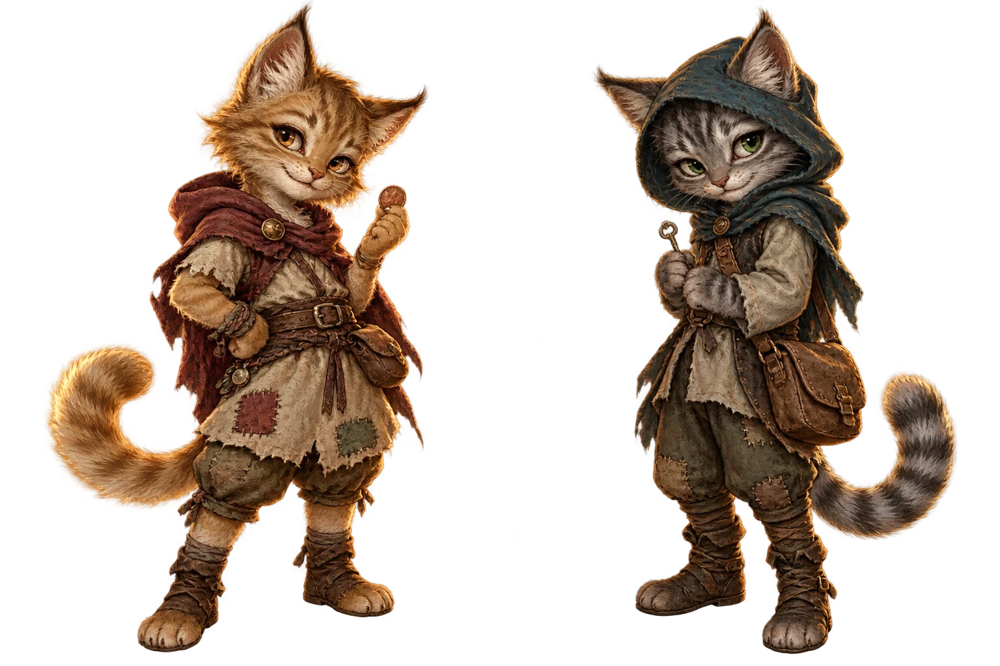

02 / UMA HISTÓRIA PARA GUARDAR
Nem todo tesouro
é feito de ouro.
Das ruas geladas a uma porta aberta.
O começo da história dos Pickpocket.
PSIU… NINGUÉM ESTÁ OLHANDO.
Este aqui guarda duas.
Toque na fechadura para tentar a sorte
CRÔNICAS DE WINTERHOLD
Conheça Khajira e Otumuz. Dois irmãos, alguns bolsos vazios e uma história que vale mais do que qualquer moeda.
Conheça os pequenos culpados ↗Ou sente-se para ouvir a história ↓01 / OS SUSPEITOS DE SEMPRE
Não tinham grandes armas.
Não conheciam magia.
Mas tinham um ao outro.

Pequenos no tamanho.02 / UMA HISTÓRIA PARA GUARDAR
Das ruas geladas a uma porta aberta.
O começo da história dos Pickpocket.
03 / ACHADOS. DEFINITIVAMENTE ACHADOS.
Toque nos objetos. Cada um guarda um pedacinho da história.
0 de 4 memórias descobertas
Durante muito tempo, eles tiveram apenas um ao outro.
Khajira & Otumuz Pickpocket
Sob a tutela do Arquimago Sa’hin Zah’Dar · Winterhold